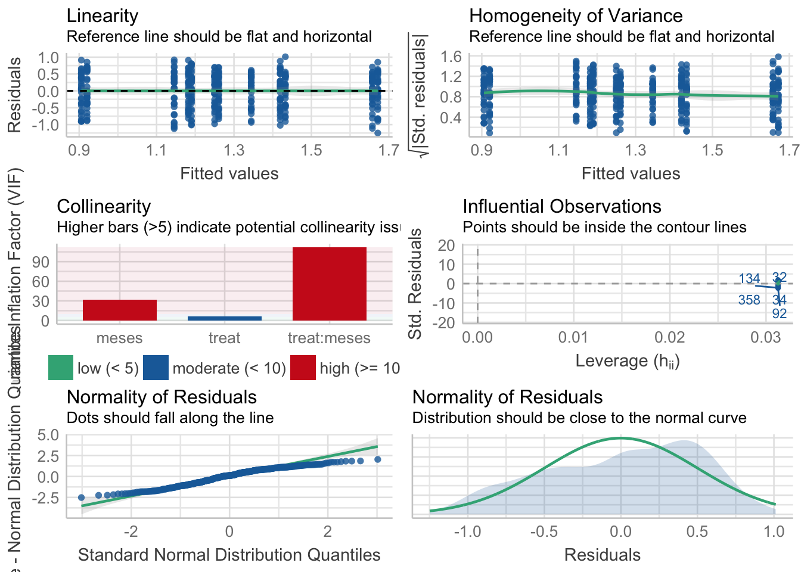

Modelos anovas informe final O2P
ajpelu
2022-02-03
Last updated: 2022-02-04
Checks: 7 0
Knit directory: veg_alcontar/
This reproducible R Markdown analysis was created with workflowr (version 1.7.0). The Checks tab describes the reproducibility checks that were applied when the results were created. The Past versions tab lists the development history.
Great! Since the R Markdown file has been committed to the Git repository, you know the exact version of the code that produced these results.
Great job! The global environment was empty. Objects defined in the global environment can affect the analysis in your R Markdown file in unknown ways. For reproduciblity it’s best to always run the code in an empty environment.
The command set.seed(20211007) was run prior to running the code in the R Markdown file. Setting a seed ensures that any results that rely on randomness, e.g. subsampling or permutations, are reproducible.
Great job! Recording the operating system, R version, and package versions is critical for reproducibility.
Nice! There were no cached chunks for this analysis, so you can be confident that you successfully produced the results during this run.
Great job! Using relative paths to the files within your workflowr project makes it easier to run your code on other machines.
Great! You are using Git for version control. Tracking code development and connecting the code version to the results is critical for reproducibility.
The results in this page were generated with repository version e8efda3. See the Past versions tab to see a history of the changes made to the R Markdown and HTML files.
Note that you need to be careful to ensure that all relevant files for the analysis have been committed to Git prior to generating the results (you can use wflow_publish or wflow_git_commit). workflowr only checks the R Markdown file, but you know if there are other scripts or data files that it depends on. Below is the status of the Git repository when the results were generated:
Ignored files:
Ignored: .Rhistory
Ignored: .Rproj.user/
Untracked files:
Untracked: data/Tasa_consumo.xlsx
Untracked: output/informes/correla_cobertura.jpg
Untracked: output/informes/correla_fitovolumen.jpg
Unstaged changes:
Modified: analysis/compara_methods.Rmd
Modified: data/Datos_congreso_AEET.xlsx
Modified: output/informes/compara_cobertura.jpg
Modified: output/informes/compara_fitovolumen.jpg
Note that any generated files, e.g. HTML, png, CSS, etc., are not included in this status report because it is ok for generated content to have uncommitted changes.
These are the previous versions of the repository in which changes were made to the R Markdown (analysis/modelos_anovas_informe_o2p.Rmd) and HTML (docs/modelos_anovas_informe_o2p.html) files. If you’ve configured a remote Git repository (see ?wflow_git_remote), click on the hyperlinks in the table below to view the files as they were in that past version.
| File | Version | Author | Date | Message |
|---|---|---|---|---|
| Rmd | e8efda3 | ajpelu | 2022-02-04 | update consumo |
| html | 812fe04 | ajpelu | 2022-02-03 | Build site. |
| Rmd | 6549b5d | ajpelu | 2022-02-03 | modelos kaka, change title |
| html | 8d3328b | ajpelu | 2022-02-03 | Build site. |
| Rmd | c36c295 | ajpelu | 2022-02-03 | modelos kaka |
Introduction
Read data
Rename the levels of zona:
- Pyric herbivorism (HP, from spanish Herbivorismo pírico): old Quemado con pastoreo
- Prescribed Fires (QP, from spanish Quemas Prescritas): old Quemado sin pastoreo
Modelo Efectos de la quema
Cobertura vegetal
\[Cobertura \sim treat + meses + treat \times meses\]
Tabla ANOVA
| Df | Sum Sq | Mean Sq | F value | Pr(>F) | |
|---|---|---|---|---|---|
| treat | 1 | 71 | 70.868 | 0.189 | 0.664 |
| meses | 5 | 85906 | 17181.183 | 45.938 | 0.000 |
| treat:meses | 5 | 965 | 192.905 | 0.516 | 0.764 |
| Residuals | 372 | 139132 | 374.012 | NA | NA |
¿Es el modelo válido?

| Version | Author | Date |
|---|---|---|
| 8d3328b | ajpelu | 2022-02-03 |
Warning: Autocorrelated residuals detected (p < .001).Warning: Variances differ between groups (Bartlett Test, p = 0.000).Warning: Non-normality of residuals detected (p < .001).OK: No outliers detected.No, se detectan varios problemas:
- No homogeneidad varianza,
- Problemas de linealirad,
- Correlaciones (problamente temporales) entre datos
Por tanto, las conclusiones que se obtuvieran de este modelado no son válidas!!. Alternativas: Modelos GLMMs, Modelos GAMMs, … ver Zuur et al. (2013)
Tabla posthoc
| treat | meses | contrast | estimate | SE | df | t.ratio | p.value |
|---|---|---|---|---|---|---|---|
| HP | . | 5 - (-1) | -41.1094 | 4.8348 | 372 | -8.5027 | 0.0000 |
| HP | . | 12 - 5 | -0.4359 | 4.8348 | 372 | -0.0902 | 1.0000 |
| HP | . | 17 - 12 | 11.9578 | 4.8348 | 372 | 2.4733 | 0.1998 |
| HP | . | 22 - 17 | -1.1313 | 4.8348 | 372 | -0.2340 | 1.0000 |
| HP | . | 29 - 22 | 6.4609 | 4.8348 | 372 | 1.3363 | 0.9600 |
| QP | . | 5 - (-1) | -49.1686 | 4.8348 | 372 | -10.1696 | 0.0000 |
| QP | . | 12 - 5 | 2.1648 | 4.8348 | 372 | 0.4478 | 1.0000 |
| QP | . | 17 - 12 | 17.1006 | 4.8348 | 372 | 3.5370 | 0.0073 |
| QP | . | 22 - 17 | -0.8781 | 4.8348 | 372 | -0.1816 | 1.0000 |
| QP | . | 29 - 22 | 1.5391 | 4.8348 | 372 | 0.3183 | 1.0000 |
| . | -1 | QP - HP | 2.2875 | 4.8348 | 372 | 0.4731 | 1.0000 |
| . | 5 | QP - HP | -5.7717 | 4.8348 | 372 | -1.1938 | 0.9858 |
| . | 12 | QP - HP | -3.1709 | 4.8348 | 372 | -0.6559 | 1.0000 |
| . | 17 | QP - HP | 1.9719 | 4.8348 | 372 | 0.4078 | 1.0000 |
| . | 22 | QP - HP | 2.2250 | 4.8348 | 372 | 0.4602 | 1.0000 |
| . | 29 | QP - HP | -2.6969 | 4.8348 | 372 | -0.5578 | 1.0000 |
Fitovolumen
\[Fitovolumen \sim treat + meses + treat \times meses\]
Tabla ANOVA
| Df | Sum Sq | Mean Sq | F value | Pr(>F) | |
|---|---|---|---|---|---|
| treat | 1 | 409567 | 409566.7 | 0.240 | 0.624 |
| meses | 5 | 484280716 | 96856143.2 | 56.803 | 0.000 |
| treat:meses | 5 | 547672 | 109534.4 | 0.064 | 0.997 |
| Residuals | 372 | 634309317 | 1705132.6 | NA | NA |
¿Es el modelo válido?
| Version | Author | Date |
|---|---|---|
| 8d3328b | ajpelu | 2022-02-03 |
Warning: Autocorrelated residuals detected (p = 0.006).Warning: Variances differ between groups (Bartlett Test, p = 0.000).Warning: Non-normality of residuals detected (p < .001).OK: No outliers detected.No, se detectan varios problemas:
- No homogeneidad varianza,
- Problemas de linealirad,
- Correlaciones (problamente temporales) entre datos
- No problemas con outlier
Por tanto, las conclusiones que se obtuvieran de este modelado no son válidas!!. Alternativas: Modelos GLMMs, Modelos GAMMs, … ver Zuur et al. (2013)
Tabla posthoc
| treat | meses | contrast | estimate | SE | df | t.ratio | p.value |
|---|---|---|---|---|---|---|---|
| HP | . | 5 - (-1) | -3153.3055 | 326.4518 | 372 | -9.6593 | 0.0000 |
| HP | . | 12 - 5 | 69.5070 | 326.4518 | 372 | 0.2129 | 1.0000 |
| HP | . | 17 - 12 | 269.1797 | 326.4518 | 372 | 0.8246 | 0.9998 |
| HP | . | 22 - 17 | 11.9375 | 326.4518 | 372 | 0.0366 | 1.0000 |
| HP | . | 29 - 22 | 180.9500 | 326.4518 | 372 | 0.5543 | 1.0000 |
| QP | . | 5 - (-1) | -3325.0494 | 326.4518 | 372 | -10.1854 | 0.0000 |
| QP | . | 12 - 5 | 72.1835 | 326.4518 | 372 | 0.2211 | 1.0000 |
| QP | . | 17 - 12 | 262.1369 | 326.4518 | 372 | 0.8030 | 0.9998 |
| QP | . | 22 - 17 | 125.5094 | 326.4518 | 372 | 0.3845 | 1.0000 |
| QP | . | 29 - 22 | 27.3250 | 326.4518 | 372 | 0.0837 | 1.0000 |
| . | -1 | QP - HP | 67.2869 | 326.4518 | 372 | 0.2061 | 1.0000 |
| . | 5 | QP - HP | -104.4571 | 326.4518 | 372 | -0.3200 | 1.0000 |
| . | 12 | QP - HP | -101.7806 | 326.4518 | 372 | -0.3118 | 1.0000 |
| . | 17 | QP - HP | -108.8234 | 326.4518 | 372 | -0.3334 | 1.0000 |
| . | 22 | QP - HP | 4.7484 | 326.4518 | 372 | 0.0145 | 1.0000 |
| . | 29 | QP - HP | -148.8766 | 326.4518 | 372 | -0.4560 | 1.0000 |
Riqueza
\[Riqueza \sim treat + meses + treat \times meses\]
Tabla ANOVA
| Df | Sum Sq | Mean Sq | F value | Pr(>F) | |
|---|---|---|---|---|---|
| treat | 1 | 502 | 501.878 | 52.899 | 0.000 |
| meses | 5 | 1822 | 364.467 | 38.416 | 0.000 |
| treat:meses | 5 | 69 | 13.846 | 1.459 | 0.202 |
| Residuals | 372 | 3529 | 9.487 | NA | NA |
¿Es el modelo válido?
| Version | Author | Date |
|---|---|---|
| 8d3328b | ajpelu | 2022-02-03 |
Warning: Autocorrelated residuals detected (p < .001).Warning: Variances differ between groups (Bartlett Test, p = 0.000).Warning: Non-normality of residuals detected (p < .001).OK: No outliers detected.# Distribution of Model Family
Predicted Distribution of Residuals
Distribution Probability
normal 53%
tweedie 47%
Predicted Distribution of Response
Distribution Probability
beta-binomial 59%
negative binomial 12%
neg. binomial (zero-infl.) 9%No, se detectan varios problemas:
- No homogeneidad varianza,
- Problemas de linealirad,
- Correlaciones (problamente temporales) entre datos
Parace también que existe un problema con la distribución de probabilidad de los residuos (habría que especificar otro tipo de distribución: e.g. beta-binomial)
Por tanto, las conclusiones que se obtuvieran de este modelado no son válidas!!. Alternativas: Modelos GLMMs, Modelos GAMMs, … ver Zuur et al. (2013)
Tabla posthoc
| treat | meses | contrast | estimate | SE | df | t.ratio | p.value |
|---|---|---|---|---|---|---|---|
| HP | . | 5 - (-1) | 1.4062 | 0.77 | 372 | 1.8262 | 0.6794 |
| HP | . | 12 - 5 | -0.7188 | 0.77 | 372 | -0.9334 | 0.9990 |
| HP | . | 17 - 12 | 6.2813 | 0.77 | 372 | 8.1570 | 0.0000 |
| HP | . | 22 - 17 | -5.4062 | 0.77 | 372 | -7.0207 | 0.0000 |
| HP | . | 29 - 22 | 2.6875 | 0.77 | 372 | 3.4901 | 0.0086 |
| QP | . | 5 - (-1) | 0.8750 | 0.77 | 372 | 1.1363 | 0.9913 |
| QP | . | 12 - 5 | 0.6875 | 0.77 | 372 | 0.8928 | 0.9994 |
| QP | . | 17 - 12 | 4.5938 | 0.77 | 372 | 5.9656 | 0.0000 |
| QP | . | 22 - 17 | -5.4375 | 0.77 | 372 | -7.0613 | 0.0000 |
| QP | . | 29 - 22 | 1.6250 | 0.77 | 372 | 2.1103 | 0.4392 |
| . | -1 | QP - HP | -1.7500 | 0.77 | 372 | -2.2726 | 0.3178 |
| . | 5 | QP - HP | -2.2813 | 0.77 | 372 | -2.9625 | 0.0507 |
| . | 12 | QP - HP | -0.8750 | 0.77 | 372 | -1.1363 | 0.9913 |
| . | 17 | QP - HP | -2.5625 | 0.77 | 372 | -3.3277 | 0.0153 |
| . | 22 | QP - HP | -2.5938 | 0.77 | 372 | -3.3683 | 0.0133 |
| . | 29 | QP - HP | -3.6563 | 0.77 | 372 | -4.7481 | 0.0000 |
Diversidad
\[Shannon \sim treat + meses + treat \times meses\]
Tabla ANOVA
| Df | Sum Sq | Mean Sq | F value | Pr(>F) | |
|---|---|---|---|---|---|
| treat | 1 | 1 | 1.296 | 5.023 | 0.026 |
| meses | 5 | 19 | 3.713 | 14.397 | 0.000 |
| treat:meses | 5 | 1 | 0.183 | 0.709 | 0.617 |
| Residuals | 372 | 96 | 0.258 | NA | NA |
¿Es el modelo válido?

| Version | Author | Date |
|---|---|---|
| 8d3328b | ajpelu | 2022-02-03 |
Warning: Autocorrelated residuals detected (p < .001).OK: There is not clear evidence for different variances across groups (Bartlett Test, p = 0.939).Warning: Non-normality of residuals detected (p < .001).OK: No outliers detected.# Distribution of Model Family
Predicted Distribution of Residuals
Distribution Probability
normal 62%
tweedie 16%
beta 12%
Predicted Distribution of Response
Distribution Probability
tweedie 47%
weibull 25%
beta 12%No, se detectan varios problemas:
- Problemas de linealirad,
- Correlaciones (problamente temporales) entre datos
Por tanto, las conclusiones que se obtuvieran de este modelado no son válidas!!. Alternativas: Modelos GLMMs, Modelos GAMMs, … ver Zuur et al. (2013)
Tabla posthoc
| treat | meses | contrast | estimate | SE | df | t.ratio | p.value |
|---|---|---|---|---|---|---|---|
| HP | . | 5 - (-1) | 0.5124 | 0.127 | 372 | 4.0359 | 0.0011 |
| HP | . | 12 - 5 | -0.1828 | 0.127 | 372 | -1.4397 | 0.9268 |
| HP | . | 17 - 12 | 0.4215 | 0.127 | 372 | 3.3201 | 0.0157 |
| HP | . | 22 - 17 | -0.3269 | 0.127 | 372 | -2.5744 | 0.1544 |
| HP | . | 29 - 22 | 0.0749 | 0.127 | 372 | 0.5896 | 1.0000 |
| QP | . | 5 - (-1) | 0.2398 | 0.127 | 372 | 1.8889 | 0.6264 |
| QP | . | 12 - 5 | 0.0446 | 0.127 | 372 | 0.3517 | 1.0000 |
| QP | . | 17 - 12 | 0.4674 | 0.127 | 372 | 3.6817 | 0.0042 |
| QP | . | 22 - 17 | -0.4754 | 0.127 | 372 | -3.7444 | 0.0033 |
| QP | . | 29 - 22 | 0.0783 | 0.127 | 372 | 0.6166 | 1.0000 |
| . | -1 | QP - HP | -0.0147 | 0.127 | 372 | -0.1155 | 1.0000 |
| . | 5 | QP - HP | -0.2872 | 0.127 | 372 | -2.2624 | 0.3248 |
| . | 12 | QP - HP | -0.0598 | 0.127 | 372 | -0.4710 | 1.0000 |
| . | 17 | QP - HP | -0.0139 | 0.127 | 372 | -0.1094 | 1.0000 |
| . | 22 | QP - HP | -0.1624 | 0.127 | 372 | -1.2794 | 0.9727 |
| . | 29 | QP - HP | -0.1590 | 0.127 | 372 | -1.2523 | 0.9776 |
Modelo Efectos tras la quema
Quitamos el momento inicial
Cobertura vegetal
\[Cobertura \sim treat + meses + treat \times meses\]
Tabla ANOVA
| Df | Sum Sq | Mean Sq | F value | Pr(>F) | |
|---|---|---|---|---|---|
| treat | 1 | 177 | 177.257 | 0.772 | 0.380 |
| meses | 4 | 19328 | 4832.032 | 21.049 | 0.000 |
| treat:meses | 4 | 774 | 193.603 | 0.843 | 0.499 |
| Residuals | 310 | 71163 | 229.556 | NA | NA |
¿Es el modelo válido?
| Version | Author | Date |
|---|---|---|
| 8d3328b | ajpelu | 2022-02-03 |
Warning: Autocorrelated residuals detected (p < .001).Warning: Variances differ between groups (Bartlett Test, p = 0.000).Warning: Non-normality of residuals detected (p < .001).OK: No outliers detected.# Distribution of Model Family
Predicted Distribution of Residuals
Distribution Probability
normal 53%
tweedie 47%
Predicted Distribution of Response
Distribution Probability
tweedie 50%
gamma 38%
weibull 9%No, se detectan varios problemas:
- No homogeneidad varianza,
- Problemas de linealirad,
- Correlaciones (problamente temporales) entre datos
- Problemas de distribución de los residuos
Por tanto, las conclusiones que se obtuvieran de este modelado no son válidas!!. Alternativas: Modelos GLMMs, Modelos GAMMs, … ver Zuur et al. (2013)
Tabla posthoc
| treat | meses | contrast | estimate | SE | df | t.ratio | p.value |
|---|---|---|---|---|---|---|---|
| HP | . | 12 - 5 | -0.4359 | 3.7878 | 310 | -0.1151 | 1.0000 |
| HP | . | 17 - 12 | 11.9578 | 3.7878 | 310 | 3.1569 | 0.0225 |
| HP | . | 22 - 17 | -1.1313 | 3.7878 | 310 | -0.2987 | 1.0000 |
| HP | . | 29 - 22 | 6.4609 | 3.7878 | 310 | 1.7057 | 0.7026 |
| QP | . | 12 - 5 | 2.1648 | 3.7878 | 310 | 0.5715 | 1.0000 |
| QP | . | 17 - 12 | 17.1006 | 3.7878 | 310 | 4.5147 | 0.0001 |
| QP | . | 22 - 17 | -0.8781 | 3.7878 | 310 | -0.2318 | 1.0000 |
| QP | . | 29 - 22 | 1.5391 | 3.7878 | 310 | 0.4063 | 1.0000 |
| . | 5 | QP - HP | -5.7717 | 3.7878 | 310 | -1.5238 | 0.8329 |
| . | 12 | QP - HP | -3.1709 | 3.7878 | 310 | -0.8371 | 0.9988 |
| . | 17 | QP - HP | 1.9719 | 3.7878 | 310 | 0.5206 | 1.0000 |
| . | 22 | QP - HP | 2.2250 | 3.7878 | 310 | 0.5874 | 1.0000 |
| . | 29 | QP - HP | -2.6969 | 3.7878 | 310 | -0.7120 | 0.9998 |
Fitovolumen
\[Fitovolumen \sim treat + meses + treat \times meses\]
Tabla ANOVA
| Df | Sum Sq | Mean Sq | F value | Pr(>F) | |
|---|---|---|---|---|---|
| treat | 1 | 674735 | 674735.35 | 1.639 | 0.201 |
| meses | 4 | 12314211 | 3078552.87 | 7.478 | 0.000 |
| treat:meses | 4 | 210063 | 52515.76 | 0.128 | 0.972 |
| Residuals | 310 | 127618607 | 411672.92 | NA | NA |
¿Es el modelo válido?
| Version | Author | Date |
|---|---|---|
| 8d3328b | ajpelu | 2022-02-03 |
Warning: Autocorrelated residuals detected (p < .001).Warning: Variances differ between groups (Bartlett Test, p = 0.000).Warning: Non-normality of residuals detected (p < .001).OK: No outliers detected.# Distribution of Model Family
Predicted Distribution of Residuals
Distribution Probability
normal 41%
lognormal 19%
F 12%
Predicted Distribution of Response
Distribution Probability
lognormal 72%
F 12%
neg. binomial (zero-infl.) 6%No, se detectan varios problemas:
- No homogeneidad varianza,
- Problemas de linealirad,
- Correlaciones (problamente temporales) entre datos
- No problemas con outlier
Por tanto, las conclusiones que se obtuvieran de este modelado no son válidas!!. Alternativas: Modelos GLMMs, Modelos GAMMs, … ver Zuur et al. (2013)
Tabla posthoc
| treat | meses | contrast | estimate | SE | df | t.ratio | p.value |
|---|---|---|---|---|---|---|---|
| HP | . | 12 - 5 | 69.5070 | 160.4044 | 310 | 0.4333 | 1.0000 |
| HP | . | 17 - 12 | 269.1797 | 160.4044 | 310 | 1.6781 | 0.7242 |
| HP | . | 22 - 17 | 11.9375 | 160.4044 | 310 | 0.0744 | 1.0000 |
| HP | . | 29 - 22 | 180.9500 | 160.4044 | 310 | 1.1281 | 0.9801 |
| QP | . | 12 - 5 | 72.1835 | 160.4044 | 310 | 0.4500 | 1.0000 |
| QP | . | 17 - 12 | 262.1369 | 160.4044 | 310 | 1.6342 | 0.7574 |
| QP | . | 22 - 17 | 125.5094 | 160.4044 | 310 | 0.7825 | 0.9994 |
| QP | . | 29 - 22 | 27.3250 | 160.4044 | 310 | 0.1704 | 1.0000 |
| . | 5 | QP - HP | -104.4571 | 160.4044 | 310 | -0.6512 | 0.9999 |
| . | 12 | QP - HP | -101.7806 | 160.4044 | 310 | -0.6345 | 0.9999 |
| . | 17 | QP - HP | -108.8234 | 160.4044 | 310 | -0.6784 | 0.9999 |
| . | 22 | QP - HP | 4.7484 | 160.4044 | 310 | 0.0296 | 1.0000 |
| . | 29 | QP - HP | -148.8766 | 160.4044 | 310 | -0.9281 | 0.9966 |
Riqueza
\[Riqueza \sim treat + meses + treat \times meses\]
Tabla ANOVA
| Df | Sum Sq | Mean Sq | F value | Pr(>F) | |
|---|---|---|---|---|---|
| treat | 1 | 458 | 458.403 | 45.980 | 0.000 |
| meses | 4 | 1447 | 361.730 | 36.283 | 0.000 |
| treat:meses | 4 | 64 | 15.927 | 1.598 | 0.175 |
| Residuals | 310 | 3091 | 9.970 | NA | NA |
¿Es el modelo válido?
| Version | Author | Date |
|---|---|---|
| 8d3328b | ajpelu | 2022-02-03 |
Warning: Autocorrelated residuals detected (p < .001).Warning: Variances differ between groups (Bartlett Test, p = 0.000).Warning: Non-normality of residuals detected (p < .001).OK: No outliers detected.# Distribution of Model Family
Predicted Distribution of Residuals
Distribution Probability
normal 53%
tweedie 44%
neg. binomial (zero-infl.) 3%
Predicted Distribution of Response
Distribution Probability
beta-binomial 69%
negative binomial 9%
poisson (zero-infl.) 9%No, se detectan varios problemas:
- No homogeneidad varianza,
- Problemas de linealirad,
- Correlaciones (problamente temporales) entre datos
Parace también que existe un problema con la distribución de probabilidad de los residuos (habría que especificar otro tipo de distribución: e.g. beta-binomial)
Por tanto, las conclusiones que se obtuvieran de este modelado no son válidas!!. Alternativas: Modelos GLMMs, Modelos GAMMs, … ver Zuur et al. (2013)
Tabla posthoc
| treat | meses | contrast | estimate | SE | df | t.ratio | p.value |
|---|---|---|---|---|---|---|---|
| HP | . | 12 - 5 | -0.7188 | 0.7894 | 310 | -0.9105 | 0.9972 |
| HP | . | 17 - 12 | 6.2812 | 0.7894 | 310 | 7.9573 | 0.0000 |
| HP | . | 22 - 17 | -5.4062 | 0.7894 | 310 | -6.8488 | 0.0000 |
| HP | . | 29 - 22 | 2.6875 | 0.7894 | 310 | 3.4046 | 0.0097 |
| QP | . | 12 - 5 | 0.6875 | 0.7894 | 310 | 0.8709 | 0.9982 |
| QP | . | 17 - 12 | 4.5937 | 0.7894 | 310 | 5.8195 | 0.0000 |
| QP | . | 22 - 17 | -5.4375 | 0.7894 | 310 | -6.8884 | 0.0000 |
| QP | . | 29 - 22 | 1.6250 | 0.7894 | 310 | 2.0586 | 0.4147 |
| . | 5 | QP - HP | -2.2812 | 0.7894 | 310 | -2.8900 | 0.0523 |
| . | 12 | QP - HP | -0.8750 | 0.7894 | 310 | -1.1085 | 0.9828 |
| . | 17 | QP - HP | -2.5625 | 0.7894 | 310 | -3.2463 | 0.0167 |
| . | 22 | QP - HP | -2.5937 | 0.7894 | 310 | -3.2859 | 0.0146 |
| . | 29 | QP - HP | -3.6562 | 0.7894 | 310 | -4.6319 | 0.0001 |
Diversidad
\[Shannon \sim treat + meses + treat \times meses\]
Tabla ANOVA
| Df | Sum Sq | Mean Sq | F value | Pr(>F) | |
|---|---|---|---|---|---|
| treat | 1 | 1 | 1.490 | 5.840 | 0.016 |
| meses | 4 | 8 | 2.032 | 7.963 | 0.000 |
| treat:meses | 4 | 1 | 0.179 | 0.703 | 0.591 |
| Residuals | 310 | 79 | 0.255 | NA | NA |
¿Es el modelo válido?
| Version | Author | Date |
|---|---|---|
| 8d3328b | ajpelu | 2022-02-03 |
Warning: Autocorrelated residuals detected (p < .001).OK: There is not clear evidence for different variances across groups (Bartlett Test, p = 0.863).Warning: Non-normality of residuals detected (p < .001).OK: No outliers detected.# Distribution of Model Family
Predicted Distribution of Residuals
Distribution Probability
normal 94%
bernoulli 3%
poisson (zero-infl.) 3%
Predicted Distribution of Response
Distribution Probability
weibull 84%
normal 9%
beta 3%No, se detectan varios problemas:
- Problemas de linealirad,
- Correlaciones (problamente temporales) entre datos
Por tanto, las conclusiones que se obtuvieran de este modelado no son válidas!!. Alternativas: Modelos GLMMs, Modelos GAMMs, … ver Zuur et al. (2013)
Tabla posthoc
| treat | meses | contrast | estimate | SE | df | t.ratio | p.value |
|---|---|---|---|---|---|---|---|
| HP | . | 12 - 5 | -0.1828 | 0.1263 | 310 | -1.4475 | 0.8768 |
| HP | . | 17 - 12 | 0.4215 | 0.1263 | 310 | 3.3381 | 0.0122 |
| HP | . | 22 - 17 | -0.3269 | 0.1263 | 310 | -2.5884 | 0.1236 |
| HP | . | 29 - 22 | 0.0749 | 0.1263 | 310 | 0.5928 | 1.0000 |
| QP | . | 12 - 5 | 0.0446 | 0.1263 | 310 | 0.3536 | 1.0000 |
| QP | . | 17 - 12 | 0.4674 | 0.1263 | 310 | 3.7017 | 0.0033 |
| QP | . | 22 - 17 | -0.4754 | 0.1263 | 310 | -3.7647 | 0.0026 |
| QP | . | 29 - 22 | 0.0783 | 0.1263 | 310 | 0.6199 | 1.0000 |
| . | 5 | QP - HP | -0.2872 | 0.1263 | 310 | -2.2747 | 0.2670 |
| . | 12 | QP - HP | -0.0598 | 0.1263 | 310 | -0.4736 | 1.0000 |
| . | 17 | QP - HP | -0.0139 | 0.1263 | 310 | -0.1100 | 1.0000 |
| . | 22 | QP - HP | -0.1624 | 0.1263 | 310 | -1.2863 | 0.9444 |
| . | 29 | QP - HP | -0.1590 | 0.1263 | 310 | -1.2591 | 0.9525 |
Tasa consumo
\[Tasa consumo \sim treat + meses + treat \times meses\]
Tabla ANOVA
| Df | Sum Sq | Mean Sq | F value | Pr(>F) | |
|---|---|---|---|---|---|
| treat | 1 | 1 | 1.490 | 5.840 | 0.016 |
| meses | 4 | 8 | 2.032 | 7.963 | 0.000 |
| treat:meses | 4 | 1 | 0.179 | 0.703 | 0.591 |
| Residuals | 310 | 79 | 0.255 | NA | NA |
Visualizando el modelo
¿Es el modelo válido?
Warning: Autocorrelated residuals detected (p < .001).OK: There is not clear evidence for different variances across groups (Bartlett Test, p = 0.863).Warning: Non-normality of residuals detected (p < .001).OK: No outliers detected.# Distribution of Model Family
Predicted Distribution of Residuals
Distribution Probability
normal 94%
bernoulli 3%
poisson (zero-infl.) 3%
Predicted Distribution of Response
Distribution Probability
weibull 84%
normal 9%
beta 3%No, se detectan varios problemas:
- Problemas de linealirad,
- Correlaciones (problamente temporales) entre datos
Por tanto, las conclusiones que se obtuvieran de este modelado no son válidas!!. Alternativas: Modelos GLMMs, Modelos GAMMs, … ver Zuur et al. (2013)
Tabla posthoc
| treat | meses | contrast | estimate | SE | df | t.ratio | p.value |
|---|---|---|---|---|---|---|---|
| HP | . | 12 - 5 | -0.1828 | 0.1263 | 310 | -1.4475 | 0.8768 |
| HP | . | 17 - 12 | 0.4215 | 0.1263 | 310 | 3.3381 | 0.0122 |
| HP | . | 22 - 17 | -0.3269 | 0.1263 | 310 | -2.5884 | 0.1236 |
| HP | . | 29 - 22 | 0.0749 | 0.1263 | 310 | 0.5928 | 1.0000 |
| QP | . | 12 - 5 | 0.0446 | 0.1263 | 310 | 0.3536 | 1.0000 |
| QP | . | 17 - 12 | 0.4674 | 0.1263 | 310 | 3.7017 | 0.0033 |
| QP | . | 22 - 17 | -0.4754 | 0.1263 | 310 | -3.7647 | 0.0026 |
| QP | . | 29 - 22 | 0.0783 | 0.1263 | 310 | 0.6199 | 1.0000 |
| . | 5 | QP - HP | -0.2872 | 0.1263 | 310 | -2.2747 | 0.2670 |
| . | 12 | QP - HP | -0.0598 | 0.1263 | 310 | -0.4736 | 1.0000 |
| . | 17 | QP - HP | -0.0139 | 0.1263 | 310 | -0.1100 | 1.0000 |
| . | 22 | QP - HP | -0.1624 | 0.1263 | 310 | -1.2863 | 0.9444 |
| . | 29 | QP - HP | -0.1590 | 0.1263 | 310 | -1.2591 | 0.9525 |
Tasa de consumo
\[Consumo \sim treat + meses + treat \times meses\]
Tabla ANOVA
| Df | Sum Sq | Mean Sq | F value | Pr(>F) | |
|---|---|---|---|---|---|
| treat | 1 | 6 | 5.980 | 35.126 | 0 |
| meses | 4 | 30 | 7.557 | 44.389 | 0 |
| treat:meses | 4 | 4 | 1.063 | 6.242 | 0 |
| Residuals | 310 | 53 | 0.170 | NA | NA |
Visualizando el modelo

¿Es el modelo válido?

Warning: Autocorrelated residuals detected (p = 0.002).Warning: Variances differ between groups (Bartlett Test, p = 0.000).Warning: Non-normality of residuals detected (p < .001).OK: No outliers detected.# Distribution of Model Family
Predicted Distribution of Residuals
Distribution Probability
normal 53%
tweedie 34%
beta 9%
Predicted Distribution of Response
Distribution Probability
tweedie 88%
beta 6%
poisson (zero-infl.) 6%No, se detectan varios problemas:
- No homogeneidad varianza,
- Problemas de linealirad,
- Correlaciones (problamente temporales) entre datos
Por tanto, las conclusiones que se obtuvieran de este modelado no son válidas!!. Alternativas: Modelos GLMMs, Modelos GAMMs, … ver Zuur et al. (2013)
Tabla posthoc
| treat | meses | contrast | estimate | SE | df | t.ratio | p.value |
|---|---|---|---|---|---|---|---|
| HP | . | 12 - 5 | 1.2113 | 0.1032 | 310 | 11.7427 | 0.0000 |
| HP | . | 17 - 12 | -0.7063 | 0.1032 | 310 | -6.8469 | 0.0000 |
| HP | . | 22 - 17 | -0.2596 | 0.1032 | 310 | -2.5169 | 0.1491 |
| HP | . | 29 - 22 | -0.0007 | 0.1032 | 310 | -0.0069 | 1.0000 |
| QP | . | 12 - 5 | 0.5609 | 0.1032 | 310 | 5.4377 | 0.0000 |
| QP | . | 17 - 12 | -0.4509 | 0.1032 | 310 | -4.3713 | 0.0002 |
| QP | . | 22 - 17 | 0.0404 | 0.1032 | 310 | 0.3912 | 1.0000 |
| QP | . | 29 - 22 | -0.1323 | 0.1032 | 310 | -1.2822 | 0.9457 |
| . | 5 | QP - HP | 0.0000 | 0.1032 | 310 | 0.0000 | 1.0000 |
| . | 12 | QP - HP | -0.6504 | 0.1032 | 310 | -6.3050 | 0.0000 |
| . | 17 | QP - HP | -0.3950 | 0.1032 | 310 | -3.8294 | 0.0020 |
| . | 22 | QP - HP | -0.0950 | 0.1032 | 310 | -0.9214 | 0.9968 |
| . | 29 | QP - HP | -0.2266 | 0.1032 | 310 | -2.1967 | 0.3159 |
R version 4.0.2 (2020-06-22)
Platform: x86_64-apple-darwin17.0 (64-bit)
Running under: macOS Catalina 10.15.3
Matrix products: default
BLAS: /Library/Frameworks/R.framework/Versions/4.0/Resources/lib/libRblas.dylib
LAPACK: /Library/Frameworks/R.framework/Versions/4.0/Resources/lib/libRlapack.dylib
locale:
[1] en_US.UTF-8/en_US.UTF-8/en_US.UTF-8/C/en_US.UTF-8/en_US.UTF-8
attached base packages:
[1] stats graphics grDevices utils datasets methods base
other attached packages:
[1] emmeans_1.5.4 plotrix_3.8-1 gtsummary_1.4.2 patchwork_1.1.1
[5] performance_0.8.0 broom_0.7.9 tidymv_3.2.1 ggpubr_0.4.0
[9] kableExtra_1.3.1 janitor_2.1.0 here_1.0.1 forcats_0.5.1
[13] stringr_1.4.0 dplyr_1.0.6 purrr_0.3.4 readr_1.4.0
[17] tidyr_1.1.3 tibble_3.1.2 ggplot2_3.3.5 tidyverse_1.3.1
[21] workflowr_1.7.0
loaded via a namespace (and not attached):
[1] TH.data_1.0-10 colorspace_2.0-2 ggsignif_0.6.0
[4] ggridges_0.5.3 ellipsis_0.3.2 rio_0.5.16
[7] rprojroot_2.0.2 estimability_1.3 snakecase_0.11.0
[10] parameters_0.14.0 fs_1.5.0 rstudioapi_0.13
[13] farver_2.1.0 ggrepel_0.9.1 fansi_0.4.2
[16] mvtnorm_1.1-1 lubridate_1.7.10 xml2_1.3.2
[19] codetools_0.2-18 splines_4.0.2 robustbase_0.93-7
[22] knitr_1.31 jsonlite_1.7.2 gt_0.3.0
[25] dbplyr_2.1.1 effectsize_0.4.5 compiler_4.0.2
[28] httr_1.4.2 backports_1.2.1 assertthat_0.2.1
[31] Matrix_1.3-2 fastmap_1.1.0 cli_2.5.0
[34] later_1.1.0.1 htmltools_0.5.2 tools_4.0.2
[37] coda_0.19-4 gtable_0.3.0 glue_1.4.2
[40] Rcpp_1.0.7 carData_3.0-4 cellranger_1.1.0
[43] jquerylib_0.1.3 vctrs_0.3.8 nlme_3.1-152
[46] broom.helpers_1.4.0 insight_0.14.4 xfun_0.23
[49] ps_1.5.0 openxlsx_4.2.3 rvest_1.0.0
[52] lifecycle_1.0.1 rstatix_0.6.0 DEoptimR_1.0-8
[55] MASS_7.3-53 zoo_1.8-8 getPass_0.2-2
[58] scales_1.1.1.9000 hms_1.0.0 promises_1.2.0.1
[61] sandwich_3.0-0 qqplotr_0.0.5 yaml_2.2.1
[64] curl_4.3 gridExtra_2.3 see_0.6.4
[67] sass_0.3.1 stringi_1.7.4 bayestestR_0.9.0
[70] highr_0.8 randomForest_4.6-14 zip_2.1.1
[73] rlang_0.4.12 pkgconfig_2.0.3 evaluate_0.14
[76] lattice_0.20-41 labeling_0.4.2 processx_3.5.1
[79] tidyselect_1.1.1 ggsci_2.9 plyr_1.8.6
[82] magrittr_2.0.1 R6_2.5.1 generics_0.1.0
[85] multcomp_1.4-16 DBI_1.1.1 pillar_1.6.1
[88] haven_2.3.1 whisker_0.4 foreign_0.8-81
[91] withr_2.4.1 mgcv_1.8-33 survival_3.2-7
[94] abind_1.4-5 modelr_0.1.8 crayon_1.4.1
[97] car_3.0-10 utf8_1.1.4 rmarkdown_2.8
[100] grid_4.0.2 readxl_1.3.1 data.table_1.14.0
[103] callr_3.7.0 git2r_0.28.0 reprex_2.0.0
[106] digest_0.6.27 webshot_0.5.2 xtable_1.8-4
[109] httpuv_1.5.5 munsell_0.5.0 viridisLite_0.4.0
[112] bslib_0.2.4